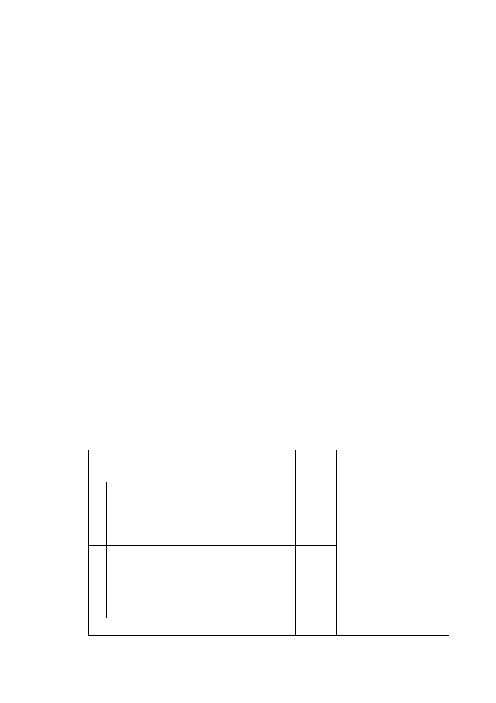

松山機場係提供國內、國際與兩岸航空運輸服務。為打造「東
北亞黃金航圈」開啟松山－虹橋、松山－羽田對飛航線，以及因
應兩岸直航之需求，實有必要建立服務與安全措施完善之機場。
交通部民用航空局為提升松山機場飛航服務安全及符合
ICAO Annex14 (國際民航公約第十四附約）規定，並致力維護國
際飛航體系安全，依規定檢討設置跑道地帶、跑道端安全區、進
場燈區。研提「松山機場北側都市計畫劃定為機場用地取得計畫」
中 程 個 案 計 畫 一 案 ， 經 行 政 院 96 年 3 月 28 日 院 臺 交 字 第
0960012190 號函核准：「照本院經濟建設委員會意見辦理」。即
行政院經濟建設委員會96 年3 月16 日都字第0960001192 號函
意見如下：「為確保飛安，符合ICAOAnnex14 及我國『民用機場
設計暨運作規劃』規定，且經評估無法以禁、限建方式辦理；以
區段徵收或市地重劃取得機場所需土地，在財務上亦不具可行
性，因此，原則同意交通部所報計畫」。並經內政部101年4月3
日內授營都字第1010148142號函同意准依都市計畫法第27條第1
項第3款辦理都市計畫變更。市府於102年9月10日以府都規字第
10236693000號公告公開展覽，並自102年9月11日起公開展覽30
日。
三、 公開展覽計畫書內容：
變更位置
原計畫 新計畫
1
機場西側，共1
處。
機場邊緣特
定專用區
機場用地
2
機場北側及西
側，共4 處。
農業區
機場用地
3
機場西側，共1
處。
污水處理
場用地
機場用地
4
機場西側，共1
處。
道路用地
合計
機場用地
面積
（ha）
變更理由
0.09 交通部民用航空局鑑於松
山機場跑道地帶寬度不
1.71
足，及現有進場燈光易受
人為阻擋，影響飛安甚
鉅，為符合國際民航公約
1.65 第十四附約規定，設置跑
道地帶、跑道端安全區、
進場燈區，以提升松山機
0.74 場飛航服務安全。
4.18
-8-